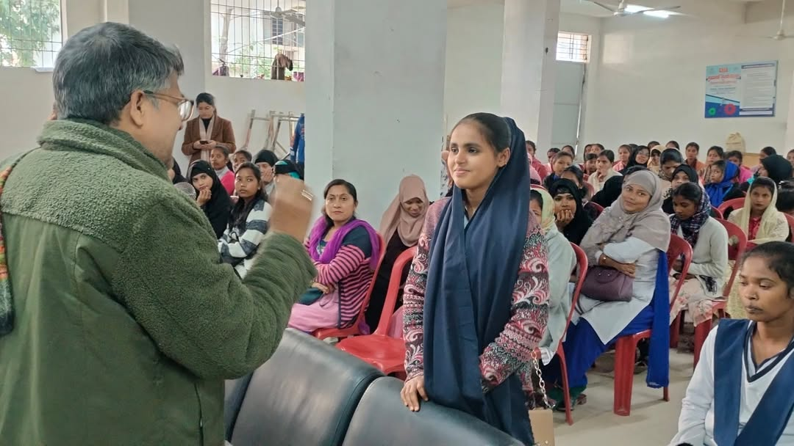
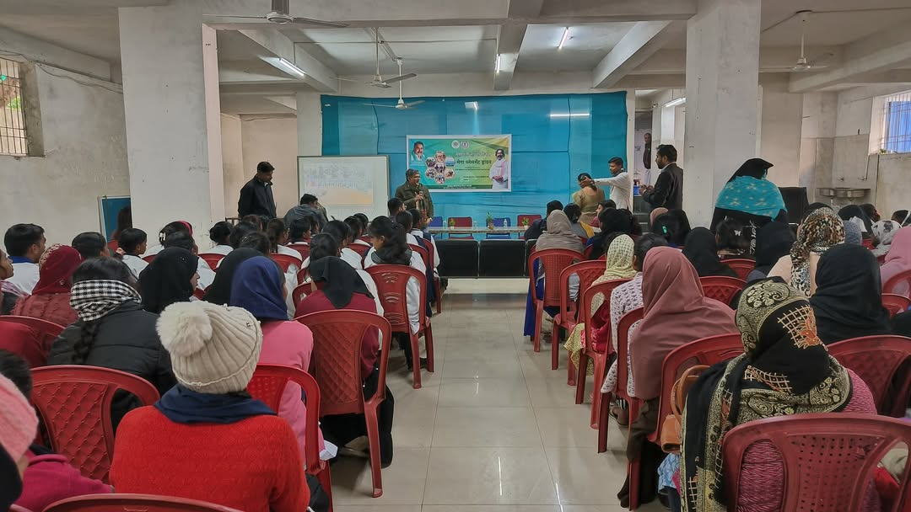
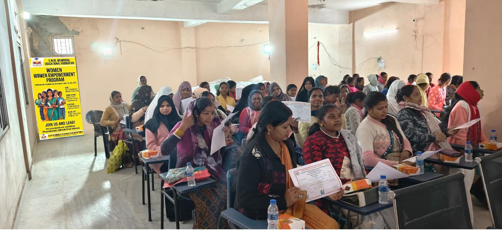

Trust Identity
Visual material used for branding and presentation
Gallery page using your actual local images.
Easy to replace with more event photos later
Gallery
A dedicated photo page for trust identity and activities.
You wanted separate pages for different content. This gallery page keeps images in their own focused section and gives the website a more complete NGO presence.

Campaign Visual
Supporting the trust’s public communication
Awareness Creative
Useful for outreach, posters, and campaigns

Placement Activity
Skill development and livelihood readiness

Skill Training Support
Program-linked activity visual

Community Engagement
Ground-level connection and visibility